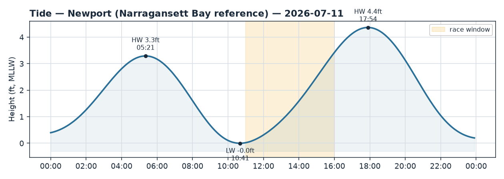
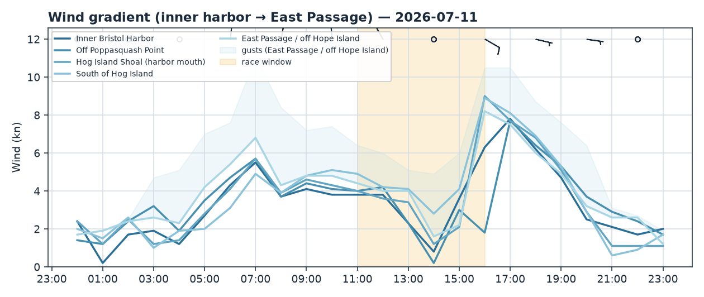
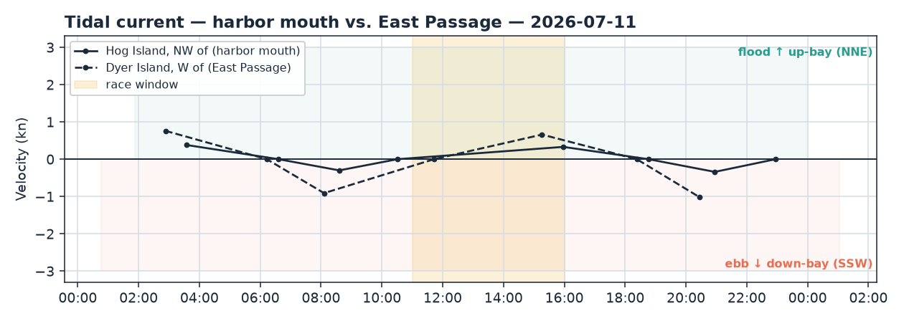

Bristol Harbor · Rhode Island
Sat 11 Jul 2026 · 11:00–16:00
Light morning NNE veering toward the E/SE as a soft sea breeze tries to fill — best pressure seaward (Hog south / East Passage); weak flood setting NNE up-bay all window, and dead-low water right at the 11:00 start.
Wind
A light, transitional day. Race-window averages run 3–5 kt with gusts only into the low teens seaward. Conimicut Light confirms the morning setup — NNE at 4.7 kt gusting 7.2 at 09:12 — a gradient northerly off the Bristol/Poppasquash land.
The fix gradient is the story: lightest under the western Poppasquash shore (2.6 kt), building as you go seaward — Hog Island mouth 3.9, East Passage 4.1, and South of Hog Island strongest at 4.8 kt with gusts to ~11 vs. 7–8 inside the harbor. Every fix shows a big clockwise veer through the window — starting N/NNE (~350°) and swinging through the E toward SE/ESE (~120°) by late afternoon. Read that as a light northerly trying to hand off to a SW sea breeze that never fully commits: expect it shifty and puffy, with the breeze veering as it clears the Poppasquash lee. Stay in phase with the oscillations rather than committing to one geographic edge, and work toward the seaward pressure when the course allows.
Current
Weak at the harbor mouth, more meaningful in the Passage.
- Harbor mouth (Hog Island NW, ACT2171): slack was at 10:31, so the window is flooding NNE (~011°, up-bay into the harbor) throughout, building slowly to a modest peak of ~0.33 kt around 15:58. Never strong, near-slack feel inside the harbor itself.
- East Passage (Dyer Island W, ACT2156): a residual ebb (SSW, ~216°, seaward) lingers until slack at 11:43, then it turns and floods NNE (~023°), building to ~0.66 kt by 15:16 — materially stronger than the mouth.
Net: after the first ~40 min the whole footprint sets NNE up-bay. That favours the N/up-bay compass lane — ride the channel axis when heading N; if you're on a seaward (S) leg you'll be pushing into it, so hunt the shallower shore edges to duck the strongest flood.
Tide
Low water −0.0 ft at 10:41, essentially dead-low right at the 11:00 start, then rising steadily to High 4.36 ft at 17:54. Flag the shallow-water caution early — mind committee-boat depth and any marks set near the harbor edges and shoals at the start; it only gets deeper as the afternoon goes.
Tactical call
Pressure trumps current in this light air. The single biggest lever is the E–W/inshore–seaward breeze gradient: it's a good 1–2 kt (and more gust) stronger from Hog Island south into the East Passage than up inside the harbor, and dead soft under the Poppasquash shore to the W. When the course lets you, work south/seaward toward the fresher air. Keep your head out of the boat — the northerly is oscillating and veering toward the E/SE, so sail the shifts in phase rather than banking one side.
Current is the secondary factor: a weak-but-building flood sets NNE up-bay, favouring the northern lane for anything heading up toward the harbor, and arguing for the shore edges over mid-channel on any seaward (S) leg to stay out of the foul flood. Remember the East Passage is still trickling SSW (ebb) for the first ~40 minutes before it turns.
If the course is set: - N–S windward/leeward: the E–W pressure gradient is your cross-course lever — lean toward the seaward/eastern pressure edge; up-bay flood gives the N-bound leg a small push. - J-hook out of the harbor: start clean in the near-slack inner harbor, then expect more breeze and more (flood) current once you hook out toward the mouth — the favoured edge flips once you're in the Passage flow. - Around Hog Island: the flood set reverses your bow-relative angle leg-by-leg (NNE up-bay) while the pressure is best on the south side of the island — call each leg on its own compass merits. - Out-and-back (light air): pure pressure play — get south to the East Passage breeze and back; current is a minor tax, weakest at the mouth.
See briefs/2026-07-11_wind.png, briefs/2026-07-11_current.png, and briefs/2026-07-11_tide.png.


